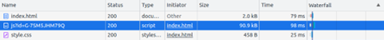

Context
The constant evolution of regulations, such as the RGPD (General Data Protection Regulation) and the REEN (Reducing the Digital Environmental Footprint) law, highlights a paradigm shift in the digital world. Companies and organizations are increasingly aware of the importance of regulatory compliance and the need to reduce their environmental impact. This has far-reaching implications for the tools and technologies used, particularly when it comes to web analytics solutions.
Today, these tools are used on a massive scale to monitor our behavior, and their impact is often underestimated when compared with other subjects, such as advertising. These are major challenges, as tracking is omnipresent in the paths and pages of digital services. What’s more, analyzing the areas frequented by the user via analytics makes it possible to target the points through which the user often passes, and therefore its main impacts. Tracking also helps to determine the usefulness of functionalities, encouraging the deactivation of unused functional elements. In this way, judicious use of analytics can bring environmental benefits by avoiding widespread impacts. Optimization and moderation in its use are crucial to minimize systemic impacts.
Choosing the right tools and adopting a good tracking strategy therefore seems to be a key element in the Digitally Responsible approach of your digital service.
In this article, we’ll explore the environmental impact of different solutions for web page tracking, to give you some idea of the impact generated by tracking, and to help you make an informed choice about which solutions to implement, based on their level of sobriety.
Why use Analytics?
Web tracking, also known as web monitoring, is the activity of collecting data on users’ interactions on the Internet, including website visits, clicks, browsing behavior and much more. It enables companies and organizations to analyze and understand users’ online behavior, measure the effectiveness of their marketing campaigns and personalize user experiences.
Web analytics focuses on the measurement and interpretation of website usage data, giving operators a detailed insight into the online activity of their visitors. This practice encompasses a wide range of information, such as :
- Number of visitors over time, distinguishing between regular visitors and newcomers, as well as the duration of their visit and the pages consulted
- Traffic sources: whether direct (when a user enters the site address directly), from other websites, from advertising or via search engines
- Geographical location of visitors
- Technical details, such as visitors’ operating system, screen resolution and web browser version
- And much more, depending on the tool used
The initial idea behind web analytics is to collect and analyze this information for a number of reasons:
- Personalizing the user experience: by gathering data collected in user profiles, these are then used to personalize ads. Instead of showing random ads to users, their profile information, such as age, gender and the sites they have visited in the past, is used to select content that matches their interests. This enables advertisers to focus their budgets on consumers who are likely to be influenced.
- Security: law enforcement and intelligence agencies can use web tracking technologies to spy on individuals. The unique identification of individuals on the Internet is important in the fight against identity theft and for the prevention of credit card fraud, for example. This subject remains closely linked to the notion of privacy, because of the potential for abuse.
- Web application usability testing or understanding user behavior: by observing the steps taken by an individual when trying to solve a certain task on a web page, usability problems can be discovered and corrected.
- Measuring performance and objectives: the aim is to maximize revenues, for example by evaluating which pages generate the most revenue, which banner ads generate the most traffic, or which stages of the order process lose customers.
These motivations support data-driven decision-making. Indeed, the data collected through web tracking helps companies or other entities to make decisions based on proven statistics. Information on user behavior helps to identify potential problems, spot opportunities for improvement and guide decisions on marketing investments, user experience and other aspects of online activity. In particular, this is how the impact of SEO (Search Engine Optimization) or SEA (Search Engine Advertising) can be assessed.
However, retrieving such a mass of information not only generates data traffic and storage for daily or long-term analysis, but also involves processing on the user’s side, whether or not they use the digital service in question. This also involves the risk of temporarily blocking the loading of a website, or failing to respect the user’s consent.
As a site owner/operator, you need to think about the economic, social and environmental impact of these tracking solutions.
While it’s important to collect digital service usage data, you need to keep it to the essentials (which is in line with the RGPD: General Data Protection Regulation).
All the more so as external services tend to weigh down sites, notably via unwanted scripts collecting user data, for example. Examples include Google Analytics, Google Recaptcha (bot detection), Google Maps and FontAwesome.
What criteria should you use to make your choice?
So what criteria should you take into account when choosing an analytics tool? Which solutions can help you make this informed collection?
We won’t go into all the criteria for user requirements in terms of ergonomics, technical support, functionality, etc. of course, but these are of prime importance in making the right choice. Of course, this remains a key point in this choice, but it differs from one organization to another.
It’s important to prioritize tools that rigorously comply with data protection regulations, such as the RGPD. Sensitive user data must be secure and treated confidentially.
When selecting analytics tools, it’s crucial to maintain a smooth user experience that’s accessible to all users.
It’s also important to consider the tool’s ecological footprint. Does the data collected correspond to the stated need? The tool must also be able to evolve with technological advances and changes in the analytics landscape. Do servers and data centers have renewable energy sources and are they managed sustainably?
We’ve also published an article on the environmental commitments of web hosting offers.
It can be difficult to have access to all this information, but it can help refine the search for more respectful solutions. If the tool is transparent about how it collects, processes and uses data, this reflects a commitment to the company’s values. Users need to have a clear understanding of how their data is used.
Selection of solutions and definition of measurement scope
We’ve taken the trouble to select 3 analytics tools that are available free of charge. Here is our selection:
- Google Analytics
- Matomo
- Plausible
Methodology
Choice of solutions studied
The choice of solutions to be analyzed was made taking into account several key criteria, such as market popularity and cost. The aim was to select solutions representative of the current web analytics landscape, in order to obtain relevant and significant results.
It should be noted that this experimental study is not intended to promote a specific solution, but rather to provide an objective assessment based on concrete data. The results of this study can serve as a reference and decision-making tool for digital players seeking to optimize their web analytics while taking into account environmental and privacy issues.
According to usage statistics provided by HTTP Archive and Patrick Hulce’s third-party service identification tool, Google Analytics, Matomo and Plausible are the most popular web analytics solutions.
| Google Analytics | Matomo | Plausible | |
| Occurrences d’utilisation | 9 887 783 | 11 610 | 17 628 |
Study preparation
As part of this comparative study of web analytics solutions, a necessary step is to measure the performance of a reference page that has no web analytics solution implemented, and to measure this same page with pages implementing web tracking solutions. This approach enables us to assess the specific impact of each solution in terms of page performance and consumption (energy, data, etc.). It’s important to note that we’ve deliberately excluded more advanced uses such as Tag Manager or advanced configuration of collected data. In addition, we have taken into account as far as possible the reality of the impact of server-side processing and storage of collected data, as projected by our model detailed in this article. Also excluded is the administrative part of these tools and the analysis of dashboards.
It’s worth noting that Matomo also offers a server-side only solution, which avoids worries about the RGPD (General Data Protection Regulation) in addition to reducing the environmental impact on the client side. We have not evaluated this solution.
We deployed a simple reference web page as well as 3 identical pages on which we implemented the 3 respective solutions. The reference page is a black screen with a standard text font and no script.
User path definition
To measure the activity of Analytics tools, we have established the following path:
- Step 1: launch browser application
- Step 2: launch url of page to be measured
- Step 3: pause (30 sec)
- Step 4: page scroll
The course consists in launching the browser application (here Chrome) and entering the url of the page to be measured (reference or with implemented solution). The process then pauses for 30 seconds to measure what happens when the user is inactive. Finally, a scroll is performed to detect the sending of additional requests describing the user’s behavior.
Measurement context
- Samsung S7, Android 10
- Network: 3G: used here to extend test performance and enable more measurement points
- Brightness: 50%.
- Tests carried out over at least 5 iterations to ensure reliability of results
Assumptions used for environmental projections
- User location: 2% France, 98% Worldwide
- Server localization: 100% worldwide (if not available for each application)
- Devices used: 60% smartphone, 38% PC, 2% tablet
| Google Analytics | Matomo | Plausible | |
| User location | 98% World 2% France | ||
| Server localization | 100% World | ||
| Devices Used | 60% smartphone, 38% PC, 2% tablet | ||
The environmental footprint depends on the location of the application’s servers, their type, the location of users and the type of devices they use. We have chosen to study all users, which corresponds to a breakdown of 2% in France and 98% for the rest of the world. This ratio is taken from We are Social’s Digital report. The global report states that 5.16 billion people are Internet users, and the French edition indicates that 53.96 million French people are Internet users.
For the overall breakdown of devices used, the previous year’s report stated a split of around 60% for smartphones, 38% for PCs and 2% for tablets.
What’s the environmental impact?
By carrying out our actual environmental impact measurements for each of our web analytics solutions, we can directly calculate the unit impact of the tool alone on a visit (loading, pausing and scrolling) from which we have subtracted the impact of the reference page. The unit impact shown below is the delta between the black page presented with analytics and the black reference page without analytics implemented.
| Solution | Unitary impact per route (g CO2e) | Impact for 10 visits/day of each instance over one year |
| Google Analytics | 0,069 | 2 490 T CO2e |
| Matomo | 0,012 | 508 kg CO2e |
| Plausible | 0,039 | 2,5 T CO2e |
For each of the analytics solutions, we have assumed that each of the sites using the solutions has a visit frequency of 10 per day.
For Google Analytics, which produces 0.069 g CO2e per visit, generates almost 2,500 tonnes of CO2e on the scale of its 9,887,783 hits over a year.
Plausible, it has a unit impact per load of 0.039 g CO2e, i.e. 2.5 T CO2e over one year for 17,628 hits.
Finally, Matomo, with 11,610 hits and an impact of 0.012 g CO2e per trip, produces 508 kg CO2e per year.
We can specify that the difference is very small because the pages are very sober, but there is very little difference between a very business-oriented solution like Google Analytics, and Plausible, which is supposed to offer a lighter solution in terms of environmental impact. The biggest impact is on the volume of use of analytics solutions.
While the difference in unit impact is very small, at the same utilization rate, some solutions are much more environmentally sober.
It is therefore in our interest to limit the use of these solutions and to favor those with the lowest impact.
For example, if web services using Google Analytics transferred their analytics usage to Matomo, the environmental impact would be greatly reduced: while visits to the almost 10 million hits of Google Analytics have an impact of 2,490 T CO2e, using the Matomo alternative, this impact would be 433 T CO2e. That’s 6 times less than the impact of Google Analytics!
Especially as Matomo offers a server-side solution. Apart from the privacy benefits of having no intermediary at data collection level and improved performance for website visitors, greenhouse gas emissions are also reduced.
For comparison
Gerry McGovern, user experience expert and author of several books on digital design, including World Wide Waste, calculates the environmental cost of using Google Analytics.
He estimates that :
- 21.6 kb of data are transferred to Google per visit
- 50 M sites use Google Analytics according to Marketing Land in 2015 (which does not correspond to our estimates)
For an estimated total of 10 visits per day per website using Google Analytics, this represents 500M page views and therefore nearly 10,800GB transferred per day or 4MGB/year.
According to his research, 1GB = 4.2 g CO2eq. So the pollution caused by the Google Analytics solution amounts to 16556kg/year.
So, for the simplest use of the tool on a very sober page, Gerry McGovern’s estimates are very low compared to the impact we’ve measured.
However, this estimate is made by taking into account only the weight of the data to make a carbon impact projection, which differs from our methodology.
To go further…
Beyond general considerations of environmental impact, an in-depth technical analysis of the requests generated by analytics tools can provide information on how these solutions operate and interact with websites (request weight, delayed loading, third-party services, etc.).
Here are the measurement values for the path (loading, pause, scroll) of the 3 web pages from which we have subtracted the reference values:
| Performance (s) | Battery discharge rate (µAh/s) | Mobile data (Ko) | |
| Google Analytics | 2,3 | 21 955 | 145,9 |
| Plausible | 1,6 | 3 604 | 29,1 |
| Matomo | 0,4 | 15 272 | 9,2 |
Unsurprisingly, Google Analytics is the most consuming and least efficient, followed by Plausible and Matomo. In fact, for every 150KB of data exchanged on the route, the Javascript file responsible for sending the request to the Google server weighs over 90KB. That’s 66 times more than Plausible. Matomo, on the other hand, uses over 40kb for this request.

On the other hand, this suggests that the larger the JS file, the more information it retrieves about the user, even if this is not necessarily a direct correlation. Other factors, such as client-side processing or code optimization, can also influence performance and data collection.
Here, a large volume of data is transmitted to the Google Tag Manager platform, yet this is not implemented in the code. The difference is obvious with Matomo, which transfers a smaller volume of data than its competitor.
What’s more, both Google Analytics and Matomo transfer cookies.
Basically, cookies were designed for a simple purpose: to store a user’s log-in information on a given site, so they’re not problematic in themselves, but they do serve many advertising, marketing and other needs to enable more targeted content based on user behavior.
So it’s important to look at the size and expiration date of these cookies. Google’s cookies are easily distinguished by their _ga prefix, while Matomo’s cookies can be identified by their _pk prefix. Google’s cookies have a total size of 80 bytes and expire only 13 months later, corresponding to the expiration date of advertising cookies. Matomo’s cookies account for 56 bytes, and one of the 2 cookies loaded expires on the same day. In both cases, the relevance of these cookies on such sober pages is questionable.
As we’ve seen, Google Analytics is the least efficient and most ecologically damaging solution, especially as the request to Google Analytics is loaded asynchronously. Although asynchronous loading is a common performance practice to avoid delaying page display, it can actually mask the real environmental impact of this solution.
In our measurement process, we sought to obtain a complete view of Google Analytics loading. It’s important to note that Google has implemented various strategies to minimize its impact on website performance. However, despite these efforts, our measurement data reveals that the impact in terms of energy and data transfer remains higher for GA than for its competitors.
The limits of our study
The results of our study have a number of limitations. Firstly, the pages measured are very simple in terms of functionality and visuals, which also implies a simple scenario, which is not necessarily representative of websites equipped with analytics tools. What’s more, due to their sobriety, these pages are very light, and the measurements taken may therefore fall within the margin of error of our measurement tool. Finally, we have very little information on the varying factors of environmental impact (server location, for example).
To conclude
In conclusion, our study of the various web analysis tools highlights some interesting nuances in terms of their environmental impact. It’s important to note that our analyses were carried out on a sober page and a very basic use case, which considerably limits the differences in impact. However, even in this context, we note high data volumes with efficiency techniques differing in certain loadings. All this for ever more analysis of user behavior, with a high environmental impact to boot.
Sources :
https://wearesocial.com/fr/blog/2023/01/digital-2023/ : rapport digital 2023, We are social
https://wearesocial.com/fr/blog/2023/02/digital-report-france-2023-%f0%9f%87%ab%f0%9f%87%b7/ : rapport digital 2023 France, We are social
https://wearesocial.com/fr/blog/2022/01/digital-2022-une-nouvelle-annee-de-croissance-exceptionnelle/ : rapport digital 2022, We are social
https://gerrymcgovern.com/ : Gerry Mc Govern
https://gerrymcgovern.com/calculating-the-pollution-cost-of-website-analytics-part-1/ : Article Calculating the pollution cost of website analytics